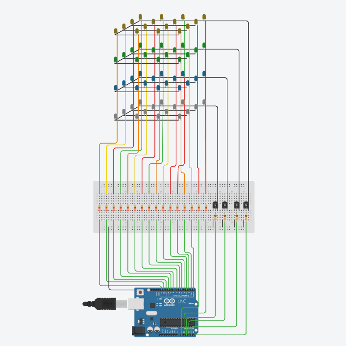

PASOS A SEGUIR
SIMULACIÓN EN TINKERCAD

Código:
int Columnas[] = {0, 1, 2, 3, 4, 5, 6, 7, 8, 9, 10, 11, 12, 13, 14, 15};
int Filas[] = {16, 17, 18, 19};
// Configuración inicial
void setup() {
for (int i = 0; i < 16; i++) {
pinMode(Columnas[i], OUTPUT);
digitalWrite(Columnas[i], LOW);
}
for (int i = 0; i < 4; i++) {
pinMode(Filas[i], OUTPUT);
digitalWrite(Filas[i], LOW);
}
}
// Encender LED en coordenadas (x, y, z)
void encenderLED(int x, int y, int z, int tiempo) {
int col = y * 4 + x; // Conversión (x, y) a índice de columna
digitalWrite(Columnas[col], HIGH);
digitalWrite(Filas[z], HIGH);
delay(tiempo);
digitalWrite(Columnas[col], LOW);
digitalWrite(Filas[z], LOW);
}
// Apagar todo
void apagarTodo() {
for (int i = 0; i < 16; i++) digitalWrite(Columnas[i], LOW);
for (int i = 0; i < 4; i++) digitalWrite(Filas[i], LOW);
}
// Figura: cubo que crece
void cuboLatente() {
for (int r = 0; r < 2; r++) {
for (int i = 0; i < 40; i++) {
encenderLED(1, 1, 1, 2);
}
for (int i = 0; i < 40; i++) {
encenderLED(1, 1, 1, 1);
encenderLED(2, 1, 1, 1);
encenderLED(1, 2, 1, 1);
encenderLED(1, 1, 2, 1);
encenderLED(2, 2, 1, 1);
encenderLED(2, 1, 2, 1);
encenderLED(1, 2, 2, 1);
encenderLED(2, 2, 2, 1);
}
}
}
// Figura: lluvia descendente
void lluviaVertical() {
for (int ciclo = 0; ciclo < 40; ciclo++) {
int x = random(0, 4);
int y = random(0, 4);
for (int z = 3; z >= 0; z--) {
encenderLED(x, y, z, 40);
}
delay(50);
}
}
// Figura: cubo parpadeante
void parpadeoCubo() {
for (int r = 0; r < 2; r++) {
for (int z = 0; z < 4; z++) {
for (int y = 0; y < 4; y++) {
for (int x = 0; x < 4; x++) {
encenderLED(x, y, z, 1);
}
}
}
delay(200);
apagarTodo();
delay(200);
}
}
// LOOP PRINCIPAL
void loop() {
parpadeoCubo();
lluviaVertical(); // Lluvia agregada como animación final
}